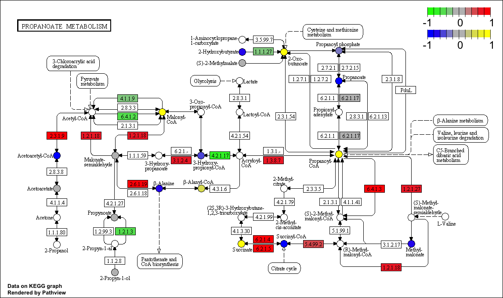

Pathview: An R package for pathway based data integration and visualization
The pathview project is hosted at http://r-forge.r-project.org/projects/pathview/ as part of R-Forge
Table of Contents
1 Overview
The pathview R package is a tool set for pathway based data integration and visualization. It maps and renders user data on relevant pathway graphs. All users need is to supply their gene or compound data and specify the target pathway. Pathview automatically downloads the pathway graph data, parses the data file, maps user data to the pathway, and renders pathway graph with the mapped data. Although built as a stand-alone program, pathview may seamlessly integrate with pathway (and functional) analysis tools for a large-scale and fully automated analysis pipeline.
Pathview generates both native KEGG view (in PNG format) and Graphviz view (in PDF format) for pathways. KEGG view keeps all the meta-data on pathways, spacial and temporal information, tissue/cell types, inputs, outputs and connections. This is important for human reading and interpretation of pathway biology. Graphviz view provides better control of node and edge attributes, better view of pathway topology, better understanding of the pathway analysis statistics. Currently only KEGG pathways are implemented. Hopefully, pathways from Reactome, NCI and other databases will be supported in the future. Notice that KEGG requires subscription for FTP access since May 2011. However, Pathview downloads individual pathway graphs and data files through html access, which is freely available (for academic and non-commerical uses). Pathview uses KEGGgraph [Zhang et al, 2009] when parsing KEGG xml data files.
Pathview provides strong support for data integration. It works with: 1) essentially all types of biological data mappable to pathways, 2) over 10 types of gene or protein IDs, and 20 types of compound or metabolite IDs, 3) pathways for over 2000 species as well as KEGG orthology, 4) varoius data attributes and formats, i.e. continuous/discrete data, matrices/vectors, single/multiple samples etc.
Pathview is open source, fully automated and error-resistant. Therefore, it seamlessly integrates with pathway or gene set analysis tools. In the vignette (tutorial), we show an integrated analysis using pathview with anothr the Bioconductor gage package [Luo et al, 2009], available from the Bioconductor website.
2 Examples
In this section, we present a few examples on visualizing and integrating user data onto pathways using pathview package. We just show you the output graphs here, and details are described in the vignette. This gives you an brief idea on how pathview may fit in your research and data analysis. Pathview's function is much more than shown here, and please check the Overview section and the vignette for details.

|
|
|
Figure 1. Example KEGG view on gene data (hsa04110 Cell cycle) |
Figure 2. Example Graphviz view on gene data (hsa04110 Cell cycle) |
|  | |
|
Figure 3. Example KEGG view with gene and compound data integrated (hsa00640 Propanoate metabolism) |
Figure 4. Example Graphviz view with gene and compound data integrated (hsa00640 Propanoate metabolism) |
3 Installation
Assume R has been correctly installed and accessible under current directory. Otherwise, please contact your system admin or follow the instructions on R website and Bioconductor website. Here I would strongly recommend users to install or upgrade to the latest verison of R (3.0)/Bioconductor (2.12) for simpler installation and better use of Pathview. You may need to update your biocLite function too if you upgrade R/Biocondutor under Windows.
Start R: from Linux/Unix command line, type in "R (Enter)"; for Mac or Windows GUI, double click the R application icon to enter R console.
End R: type in "q() (Enter)" when you are finished using R, but not now.
Two options to install pathview package are demonstrated here.
Simple way: install with Bioconductor installation script biocLite directly (this included all dependencies automatically too):
> source("http://bioconductor.org/biocLite.R")
> biocLite("pathview")
Or a bit more complexer: install through R-forge or manually, but require dependence packages to be installed using Bioconductor first:
> source("http://bioconductor.org/biocLite.R")
> biocLite(c("Rgraphviz", "png", "KEGGgraph", "org.Hs.eg.db"))
Then install pathview through R-forge:
> install.packages("pathview",repos="http://R-Forge.R-project.org")
> install.packages("/your/local/directory/pathview_1.0.0.tar.gz",
repos = NULL, type = "source")
Note that there might be problems when installing Rgraphviz or XML (KEGGgraph dependency) package with outdated R/Biocondutor. Rgraphviz installation is a bit complicate with R 2.5 (Biocondutor 2.10) or earlier versions. Please check this Readme file on Rgraphviz. On Windows systems,XML frequently needs to be installed manually. Its windows binary can be downloaded from CRAN (http://cran.r-project.org/web/packages/XML/index.html) and then:
> install.packages("/your/local/directory/XML_3.95-0.2.zip", repos = NULL)
4 Tutorial
The vignette covering the details of pathview is available here.
5 Citations
Luo W, Brouwer C. Pathview: an R/Biocondutor package for pathway-based data integration and visualization. Bioinformatics 2013, doi: 10.1093/bioinformatics/btt285
Date: 2013-4-26 EST